Hierarchy of Visual Features
Susan VanderPlas
March 30, 2015
Outline
- Psychology of Perception
- Preattentive Features
- Gestalt Laws of Perception
- Experiment
- Results
- Conclusions
- Future Work
The Psychology of Perception
Preattentive Feature Detection
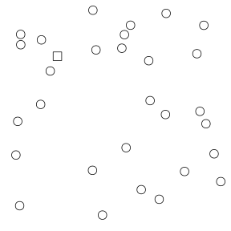
 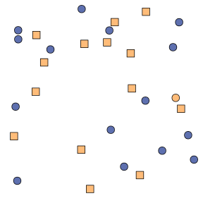
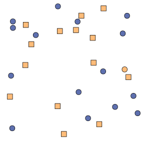
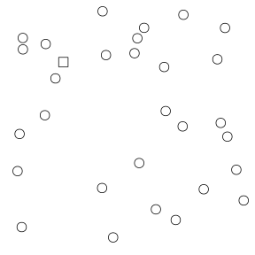
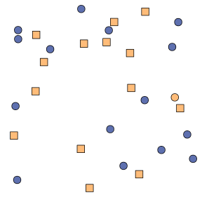
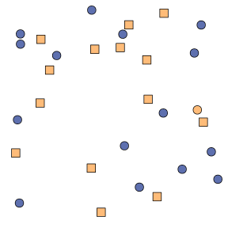Combinations of preattentive features interfere with each other and are not preattentive.
Perception of Statistical Plots
- We don't perceive plots preattentively, but some research has studied preattentive plot perception (Healy & Enns, 1999, 2012)
- Rough hierarchy of graphical features (accuracy):
| color ** | $$>$$ | shape intensity letters (HQX) |
$$>$$ | letters (HEF) |
Cleveland & McGill (1985), Lewandowsky & Spence (1989)
Gestalt Laws
Subconsciously order and group visual input

Experiment:
How do plot aesthetics affect perception of statistical plots with competing signals?
Lineups

Data-Generating Models
Provides participants with ambiguous distractor plots generated from a mixture of the two target models

 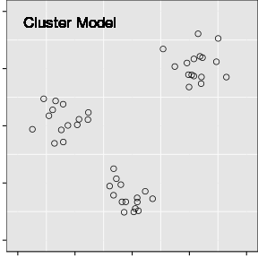
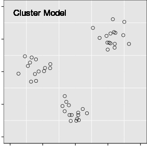| Parameters | ||
| $\sigma_T$: Variability in $y$ | $\lambda$: Mixing parameter | $K$: # clusters |
| $\sigma_C$: Variability around cluster centers | ||
Lineups

Plot Aesthetic Combinations
| Line Emphasis | ||||
| Strength | 0 | 1 | 2 | |
| Cluster Emphasis |
0 | Plain | Line | Line + Pred. Interval |
| 1 | Color Shape |
Color + Line | ||
| 2 | Color + Shape Color + Ellipse |
Color + Ellipse + Line + Pred. Interval |
||
| 3 | Color + Shape + Ellipse | |||
Experiment Structure
Model Parameters
|
Plot Level
|
Plot Aesthetics
|
Evaluation Level
|
Data Collection
- Participants recruited through Amazon Mechanical Turk
- Experiment ran for
23.8hours -
1356individuals completed13519evaluations - Data removed:
- Participants who did not complete 10 trials:
159participants,1060trials - Any trials in excess of 10 for each participant (
421trials)
Final dataset: 12010 trials completed by 1201 participants.
Data Collection
Participants provided:
- Demographic information: age range, gender, education level
- 10 plot evaluations
- Target plot identification (one or more sub-plots)
- Level of confidence in their answer (1 = least, 5=most)
- Reasoning
(i.e. "Strongest linear relationship", "Clustered points", "Odd shape")
Target Identification
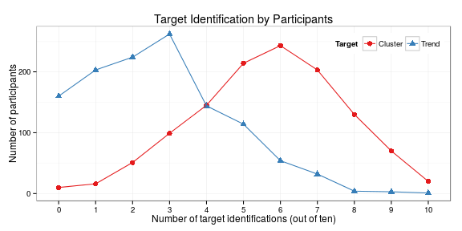
Modeling Target Plot Selection
$$ \begin{align} \text{logit }P(\text{success}) & = \textbf{X}\beta + \textbf{J}\gamma + \textbf{K}\eta + \epsilon, \\ \text{where } \beta_i & \hphantom{\sim} \text{describe the effect of specific plot aesthetics}\\ \hphantom{where } \gamma_j & \overset{iid}{\sim} N\left(0, \sigma^2_{\text{dataset}}\right)\\ \hphantom{where } \eta_k & \overset{iid}{\sim} N\left(0, \sigma^2_{\text{participant}}\right)\\ \text{and } \epsilon_{ijk} & \overset{iid}{\sim} N\left(0, \sigma^2_e\right) \end{align} $$
Variability due to model parameters is contained within the random effects for dataset
Line Target Identification

Trend + Error plots increase the odds of line target selection;
Color + Shape + Ellipse aesthetics decrease the odds of line target selection.
Gestalt Heuristics and Aesthetics
Line Target Plots

|

|
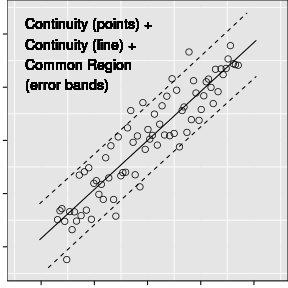 |
Cluster Target Identification

Trend + Error aesthetics decrease the odds of selecting the cluster target
Ellipses also decrease the odds of selecting the cluster target.
Gestalt Heuristics and Aesthetics
Cluster Target Plots
| 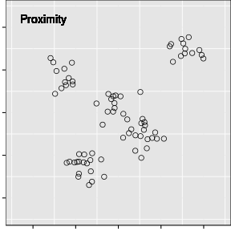 |

|
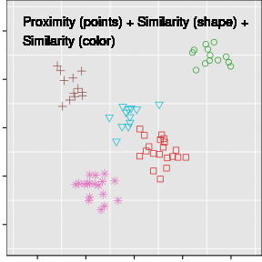 |

|

|

|
Cluster Target Identification

Cluster vs. Trend

Gestalt Heuristics and Aesthetics
Mixed Signals?
| 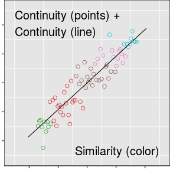 | 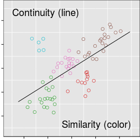 |

|

|

|

|
Response Time
$$ \begin{align} \log(\text{Trial Time}) &\sim \textbf{X}\beta + \textbf{J}\gamma + \textbf{K}\eta + \epsilon\\ \text{where } \beta_i & \text{ describe outcome and aesthetic combinations,}\\ & \text{plus an initial trial effect}\\ \hphantom{where } \gamma_j & \overset{iid}{\sim} N\left(0, \sigma^2_{\text{dataset}}\right)\\ \hphantom{where } \eta_k & \overset{iid}{\sim} N\left(0, \sigma^2_{\text{participant}}\right)\\ \text{and } \epsilon_{ijk} & \overset{iid}{\sim} N\left(0, \sigma^2_e\right) \end{align} $$
Response Time

Response Time
$$ \begin{align} \log(\text{Trial Time}) \sim& \textbf{X}\beta + \textbf{J}\eta + \epsilon\\ \text{where } \beta_i & \text{ describe outcome and model parameter interactions, }\\ &\text{ plus initial trial and aesthetic effects}\\ \hphantom{where } \eta_j & \overset{iid}{\sim} N\left(0, \sigma^2_{\text{participant}}\right)\\ \text{and } \epsilon_{ij} & \overset{iid}{\sim} N\left(0, \sigma^2_e\right) \end{align} $$
Response Time

Participant Reasoning
Plain Plots


| Neither Target | Cluster Target | Trend Target |
Participant Reasoning
Trend Line Plots


| Neither Target | Cluster Target | Trend Target |
Participant Reasoning
Color Plots


| Neither Target | Cluster Target | Trend Target |
Participant Reasoning
Color + Ellipse Plots

| Neither Target | Cluster Target | Trend Target |